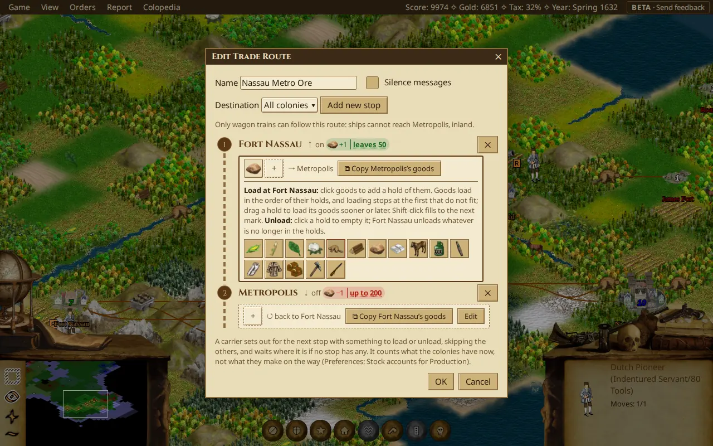
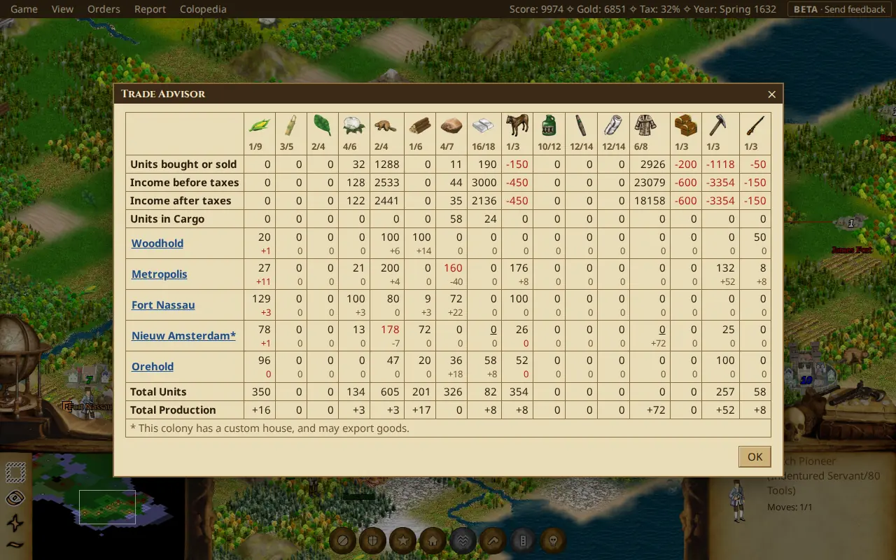

FreeCol, the open-source Colonization, in your browser. Found colonies, trade with the natives and win your independence. No install, no account.
Free. Runs in current Chrome and Firefox on a computer.




What it is
BrowserCol is FreeCol, the open-source implementation of Sid Meier's Colonization (1994), in your browser.
- The real gameFreeCol's own rules and engine, compiled to WebAssembly. It is the same game, not a lookalike.
- Nothing to installOpen the page and play. No signup, no credit card, no bullshit. Your games are saved locally in your browser, and you can also download them.
What's new
Roadmap
-
Now: in beta1.0
FreeCol 1.2, faithfully, in the browser. The same rules, the same AI and the same game.
-
Next1.1
Still FreeCol, with many quality-of-life additions, a better AI and optional new graphics.
-
Later2.0
An evolution that is no longer the same game. It adds slavery, mixed cargo holds and more.
Plans change. What is being worked on is in the issue tracker.
Questions
Is it free?
Yes. There is nothing to pay for and no account to make. BrowserCol is open source, under the GPL, like FreeCol.
Which browsers does it work in?
Current Chrome and Firefox on a desktop or laptop. It needs a browser with WebAssembly GC, which the current versions have. It is not made for phones yet.
Where are my saves?
In your browser, on this site. Clearing the site's data, or using another browser or computer, leaves them behind. To keep a game safe, save it as a file from the load dialog, and import it again whenever you like.
Can I open my desktop FreeCol saves?
Yes, and the other way round too. Underneath, BrowserCol is FreeCol: the game's engine, rules and computer
players are FreeCol's own code, compiled to run in the browser. Only the front end, the screens you see
and click, is new. So a save is an ordinary FreeCol .fsg file. Import one from the desktop
game and play on in the browser, or export a browser game and carry on in desktop FreeCol.
Use a current FreeCol on the desktop: an older version may not read a save from a newer one.
How does it differ from FreeCol?
The game logic is FreeCol's: its engine, rules and computer players are FreeCol's own code, compiled to run in the browser. What BrowserCol brings is a new front end, a browser UI that draws the map and screens and handles the mouse and keyboard, with your saves kept in the browser.
Built on FreeCol
BrowserCol is an unofficial fan project. It is built on FreeCol, the open-source game made by the FreeCol Team and released under the GNU General Public License. The game's rules and data are theirs; BrowserCol is FreeCol in the browser.
FreeCol is itself based on, and inspired by, the 1994 original, Sid Meier's Colonization by MicroProse. If you want to play that one, it is sold on GOG.
BrowserCol is not affiliated with or endorsed by the rights holders of Colonization, by GOG, or by the FreeCol Team.